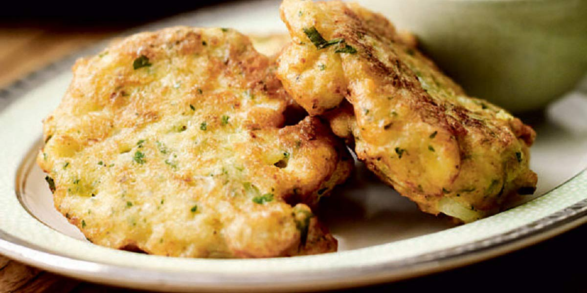

Cauliflower Fritters
Recipe Specification
Ingredients List
| Ingredients | Quantity |
|---|---|
| Cauliflower | 1x1 |
| Vegetable Oil | 60ml |
| Plain Flour | 70g |
| Medium Eggs | 2x1 |
| Garlic Cloves | 3 Cloves |
| Spring Onions | 3 Stalks |
| Table Salt | 1 tsp |
| Cracked Black Pepper | ½ tsp |
Yield: 6-8 fritters
Preparation
- Cut cauliflower into 1 inch florets.
- Peel and crush garlic cloves.
- Crack and whisk eggs
- Finely slice spring onions.
Cooking Instructions
- Place a medium sized saucepan of water over a high heat. Bring to the boil and add cauliflower florets. Cook for 5-6 minutes.
- Remove cauliflower floret from sauce pan and drain water.
- Roughly chop cauliflower florets and place in bowl. Add flour, eggs, garlic, spring onions salt and pepper before mixing into a coarse batter.
- Place a frying pan over a medium/high heat and add vegetable oil.
- Once hot, add a tablespoon of batter to the pan and fry for 2 minutes per side. Fry 4 fritters per batch.

Serving Suggestions
Serve fritters with a side salad.
Storing instructions
Cool to room temperature and store in an airtight contain before placing in the fridge. Consume with 4 days of making.
Reheating Instructions
Place in microwave for 2-3 minutes.